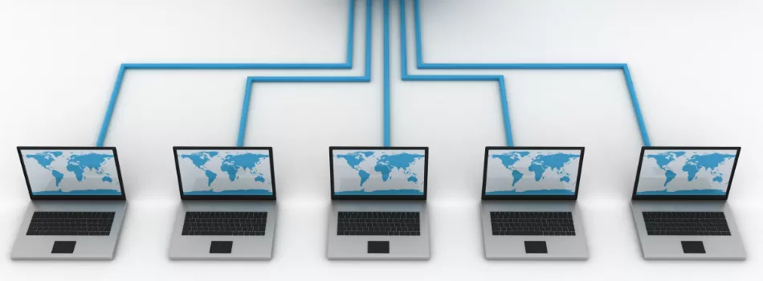
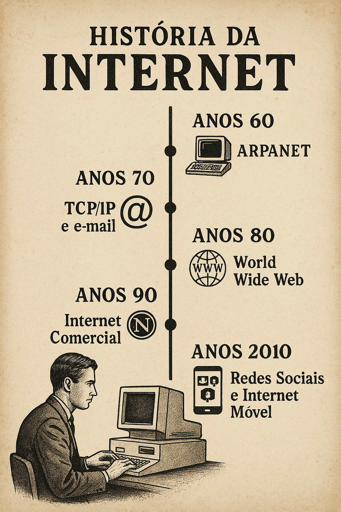

As redes de computadores evoluíram desde a ARPANET até tecnologias modernas como Wi‑Fi e SDN.


A rede de computadores é uma infraestrutura que interconecta dispositivos para estabelecer um sistema de comunicação, troca de dados e recursos. Ela abrange ambientes físicos tradicionais e arquiteturas baseadas em nuvem.